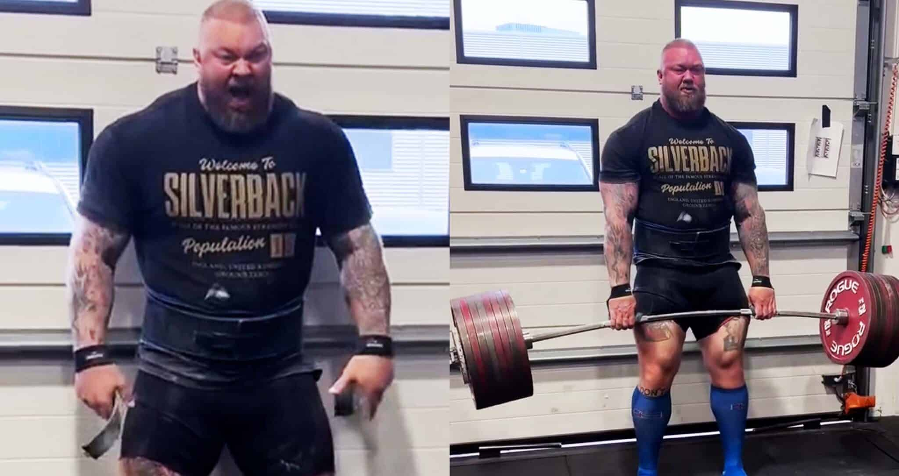

Thor’s Comeback and the Final Deadlift Records
Thor’s Comeback After Boxing
After slimming down for his boxing fight with Eddie Hall, Thor weighed nearly 100 pounds less than his strongman prime. Many assumed his strength career was finished. Instead, he rebuilt himself smarter: he returned to heavy pulling while keeping the conditioning, mobility, and discipline from boxing. By age 36, Thor had not only regained his power but surpassed it, showing that he could evolve as an athlete while others faded.
505kg at Eisenhart (July 2025)
On July 26, 2025, in Bavaria, Germany, Thor pulled 505kg (1,113 lbs) at the Eisenhart Strongman event. This lift broke his old 501kg mark and, for the first time, did so in a traditional sanctioned competition. It removed any doubt about the legitimacy of his records and showed he could hit all-time numbers under the same lights and pressure as Eddie.
Here is this incredible Feat Thors 505
510kg at Giants Live (September 2025)
Only eight weeks later, Thor went to Birmingham for the Giants Live Mutant World Deadlift Championships. On September 6, 2025, he pulled 510kg (1,124 lbs), the heaviest deadlift ever completed. Unlike Eddie’s 500kg attempt, which left him unconscious and injured, Thor’s lift looked smooth. Even more impressively, he went on to win the entire strongman contest the same day.
Here is the video of the 510kg deadlift skip to 5:15 Thors 510
Eddie vs Thor Deadlift Accomplishments
- Eddie Hall: First man ever to deadlift 500kg in competition (2016). Did it in front of thousands with maximum pressure. Paid a heavy price with his health but made history.
- Hafthor Björnsson: Broke Eddie’s record with 501kg in 2020. Extended it to 505kg in July 2025 and then 510kg in September 2025, while still winning full strongman contests at age 36.
Conclusion: Two Legacies
Eddie Hall will always be remembered as the pioneer who proved the impossible could be done. Thor Björnsson will be remembered as the man who took it further, repeatedly, and made the world record his own. Their rivalry pushed each other beyond limits, raised the ceiling for human strength, and turned a niche sport into a worldwide spectacle.
Direct Comparison, Who do you think was stronger?
- Eddie: First man to 500kg, in competition, against all odds.
- Eddie: Sacrificed his body for the lift and nearly passed out.
- Thor: Took the record beyond with 501, 505, and 510kg.
- Thor: Made record lifts look smooth and still won contests the same day.
Where We Are in the Story
- Thor’s comeback after boxing
- 505kg at Eisenhart (July 2025)
- 510kg at Giants Live (Sept 2025)
- Eddie vs Thor accomplishments
- Conclusion: two legacies
- Direct comparison & final question